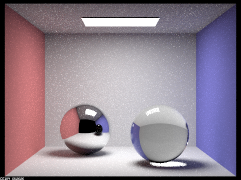
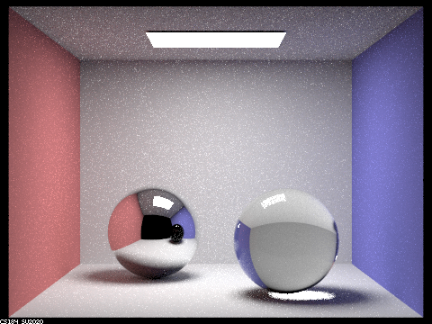
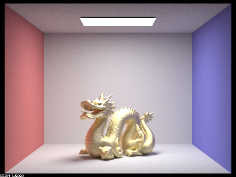

|  |

|
|
Overall, this project went smoothly.
In this project, we approached the parts and tasks by following the spec, lecture slides, and piazza threads. When we ran into bugs, we tried commenting out code to locate where the issue was. We looked through piazza and attended project parties to get help.
We learned about how materials like mirror and glass reflect and/or refract light differently. Implementing glass was particularly interesting in using Schlick's approximation to model either reflection or refraction of light. We also learned about what factors affect the material properties.
We implemented reflect and refract functions, which were then called in the sample_f functions of the mirror and glass classes.
Images of scene CBspheres.dae rendered with 64 samples per pixel, 4 samples per light, and max_ray_depth set to 0, 1, 2, 3, 4, 5, and 100:
|  |
|
|
Many multibounce effects appear in each image, different for each bounce number. With maximum ray depth 0, the spheres don't appear. For 1 bounce, light bounces off the spheres so we see them but without any mirror or glass effect. We do see the reflection of the ceiling light. For 2 bounces, the back sphere shows the reflection of the scene, but it still has a lot of black. The front sphere shows a very dark reflection of the scene, not yet refracting the light. For 3 bounces, the back sphere's reflection shows less black. The front sphere is no longer dark, but still doesn't have much of a clear glassy look with glare. For 4 bounces, the shadows in the back sphere's reflection are lighter. The front sphere looks more glassy. We also see the white dot of reflection on the blue wall. For 5 bounces, the shadows have a bit more color. For 100 bounces, the front sphere shows the most glare.
CBdragon_microfacet_au.dae rendered with 256 samples per pixel, 4 samples per light, 7 bounces, and α set to 0.005, 0.05, 0.25 and 0.5:
As α increases, the dragon becomes less glossy and more diffuse. The dragon has darker regions and more white dots with a smaller α.
|  |
CBbunny_microfacet_cu.dae rendered with cosine hemisphere sampling (default) vs importance sampling:
Rendering time anaylsis:
CBdragon_microfacet_au.dae rendered with eta and k values that correspond to Pb lead.
As partners, we each focused more on one task but helped each other. We attended project parties and communicated about what questions we would ask the TAs. We also collaborated by using CLion's Code With Me feature to pair program.
https://cal-cs184-student.github.io/sp22-project-webpages-jumony/proj3-2/index.html